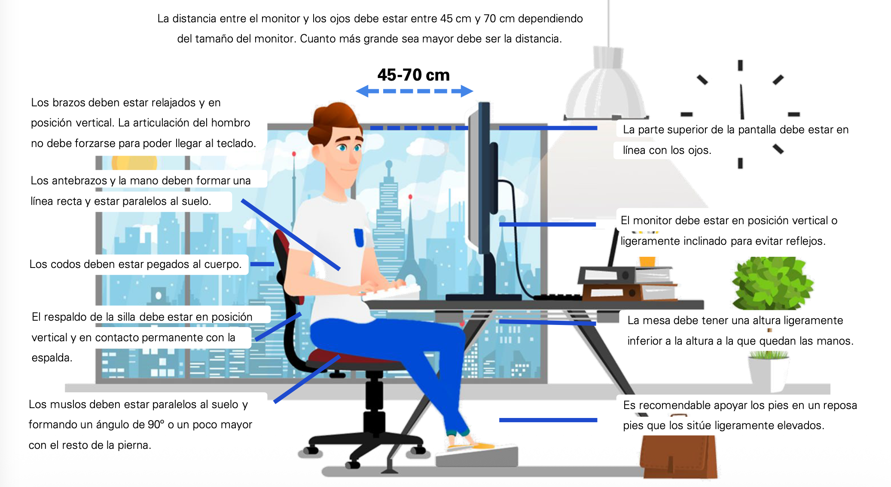

Ergonomia i consum responsable de la teecnologia
4.3.1 · Ergonomia davant les tecnologies digitals
Comencem pel més bàsic: com asseure's i col·locar els dispositius per no fer-se mal amb el seu ús diari.
Què és l'ergonomia informàtica? És la cerca de la comoditat postural saludable que hauríem d'adoptar quan fem servir dispositius digitals (ordinador, portàtil, mòbil, tauleta) durant estones llargues.
Mesures bàsiques que cal conèixer i saber aplicar:
- Postura: seure amb l'esquena recta, recolzada al respatller, en una cadira regulable en alçada.
- Pantalla: situar-la a l'alçada dels ulls i a una distància d'uns 50-70 cm, per evitar tensió al coll i a la vista.
- Mans i canells: mantenir-los en una posició neutra sobre el teclat, sense flexionar-los cap amunt ni cap avall.
- Espatlles: relaxar-les periòdicament fent moviments circulars, portant-les cap enrere i cap avall.
- Pauses actives: aixecar-se i moure's cada cert temps (una bona referència pràctica és la regla 20-20-20: cada 20 minuts, mirar durant 20 segons un punt situat a 20 peus —uns 6 metres— de distància, per descansar la vista).
A mesura que avancem cap a un ús més autònom, l'ergonomia no només s'aplica a un mateix, sinó que també s'aprèn a tenir cura de les persones de l'entorn (per exemple, corregir la postura d'un familiar o company que treballa moltes hores davant la pantalla, o adaptar el lloc de treball d'algú altre).
💡 Per a l'examen: si una pregunta presenta una il·lustració amb una postura incorrecta (pantalla massa baixa, esquena encorbada, canells doblegats), la resposta correcta sol identificar l'error postural i proposar la correcció ergonòmica bàsica descrita a dalt.
Ergonomia
